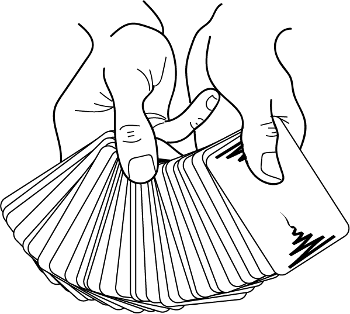
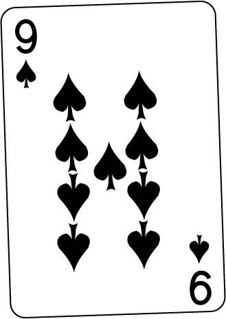
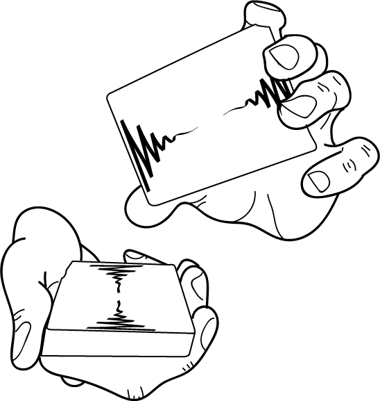
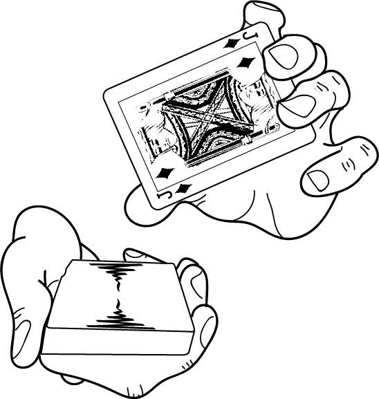
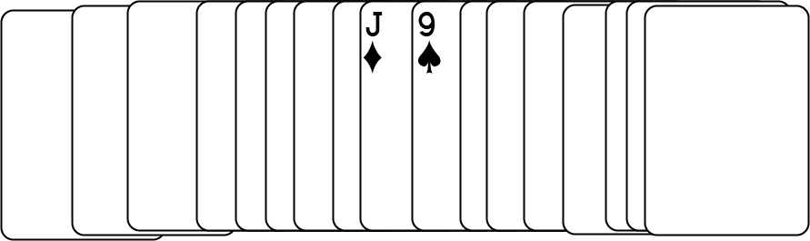

The Key Card Principle is one of the most rudimentary techniques used in sleight of hand. It requires no hand dexterity, just a quick eye. Though it is such a basic move, it is also very versatile. You can do many different effects with this one principle.

Figure 1: A card is chosen by the spectator.

Figure 2: As an example, the chosen card will be the 9 of Spades.

Figure 3: While the spectator puts the card back, hold the top packet in a way that allows you to see the bottom card of that packet.

Figure 4: This is what you should see. As an example, the key card is the Jack of Diamonds.

Figure 5: The key card is now on top of the chosen card. Now that you know this, you can easily find the spectator's chosen card.